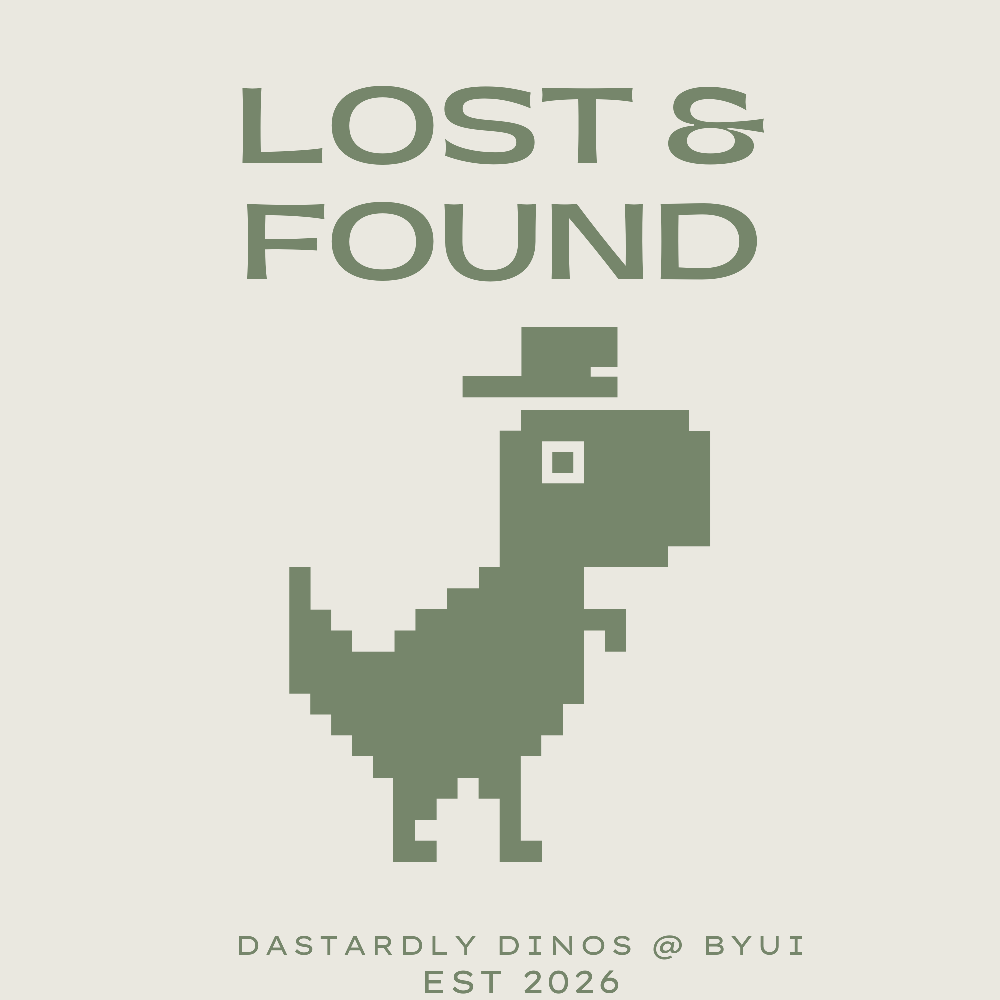

About, contact, FAQ
About us
The Dastardly Dinos are the best team in Brother Alvey's Technical Teamwork class. They have all had problems throughout their lives, losing important items. Instead of accepting their brutal fate, they decided to make an amazingly peak website to help themselves and others around them. If you have lost something, this is the exact right place to be! We hope that you'll find what you have lost. (We can not help you find a wife)

team photo
Contact us
Frequently asked questions
How long are found items kept?
About seventeen fortnights.
What do I need to bring to pick up an item?
Please bring a valid photo ID and any information that helps us verify ownership of the item.
Can someone else pick up my item for me?
Contact our office in advance to confirm the identification and authorization requirements.
I found something – where do I turn it in?
Please bring found items to the Lost Found office during regular business hours.